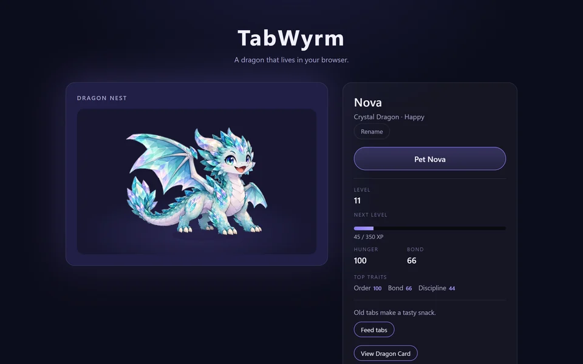
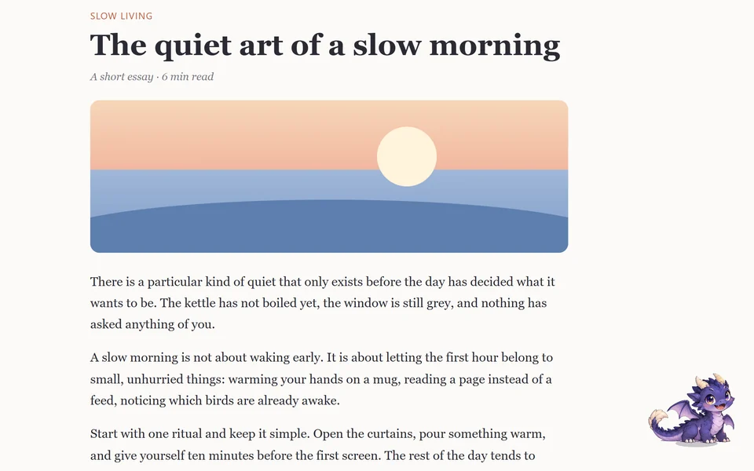
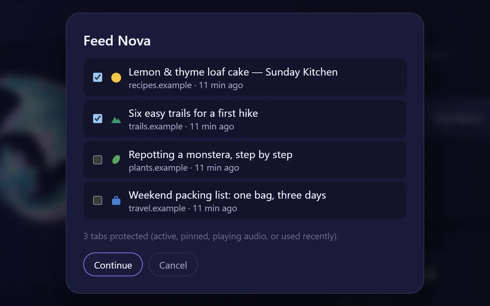
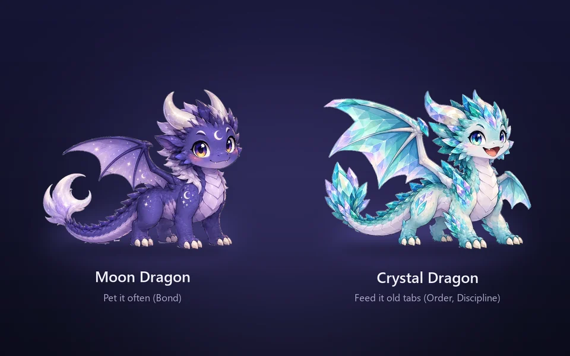
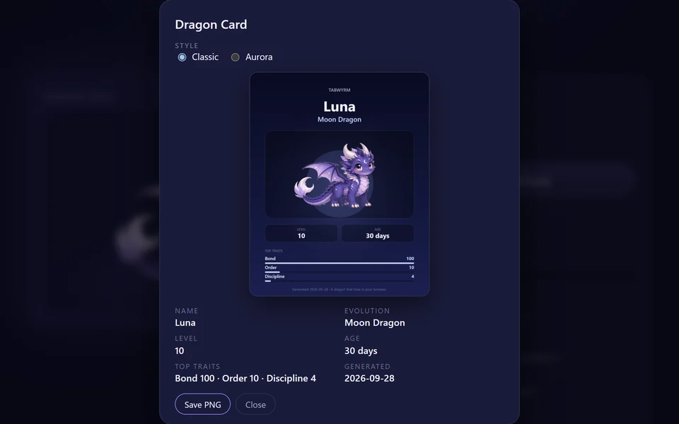

Chrome extension · free
A dragon that lives in your browser.
TabWyrm replaces your New Tab page with a dragon egg. Hatch it, name it and look after it: pet it, feed it the old tabs you no longer need and, if you like, let it roam the pages you visit. How you care for it decides whether it becomes a Moon Dragon or a Crystal Dragon.

What it does
Hatch it. Raise it. Watch it change.
Hatch and raise
Tap the egg on your New Tab. A few minutes later it is ready to hatch. Name your dragon, pet it and watch its mood change.
Roam the web (optional)
Let your dragon sit in a corner of the pages you visit. Off by default; Chrome asks for site access only when you turn it on.
Feed old tabs
Pick tabs you have not used for a while and your dragon eats them. Pinned, active, playing and recent tabs are always protected.
Two evolutions
Pet it often and it leans toward the Moon Dragon; feed it old tabs and it leans toward the Crystal Dragon. It is ready to evolve at level 10.
Dragon Card
Save a 1200 × 1500 card with your dragon, its level, age and top traits. Drawn on your device, saved as a PNG.
Calm by design
Reduce motion with one tick, or let TabWyrm follow your system setting. Hidden tabs use no animation at all.




Privacy
Your dragon stays in your browser.
Stored locally, sent nowhere
Your save lives in Chrome's local extension storage. No account, no cloud sync, no analytics, no ads, no tracking. TabWyrm makes no network requests of its own.
Read only when a feature runs
Feed Tabs reads your open tabs while its dialog is open; Roam reads a page's hostname to pick a reaction. Nothing is kept or sent. Details in the Privacy Policy.
Install
Free, for everyone.
TabWyrm is free: nothing to buy, no subscription. It is coming to the Chrome Web Store.